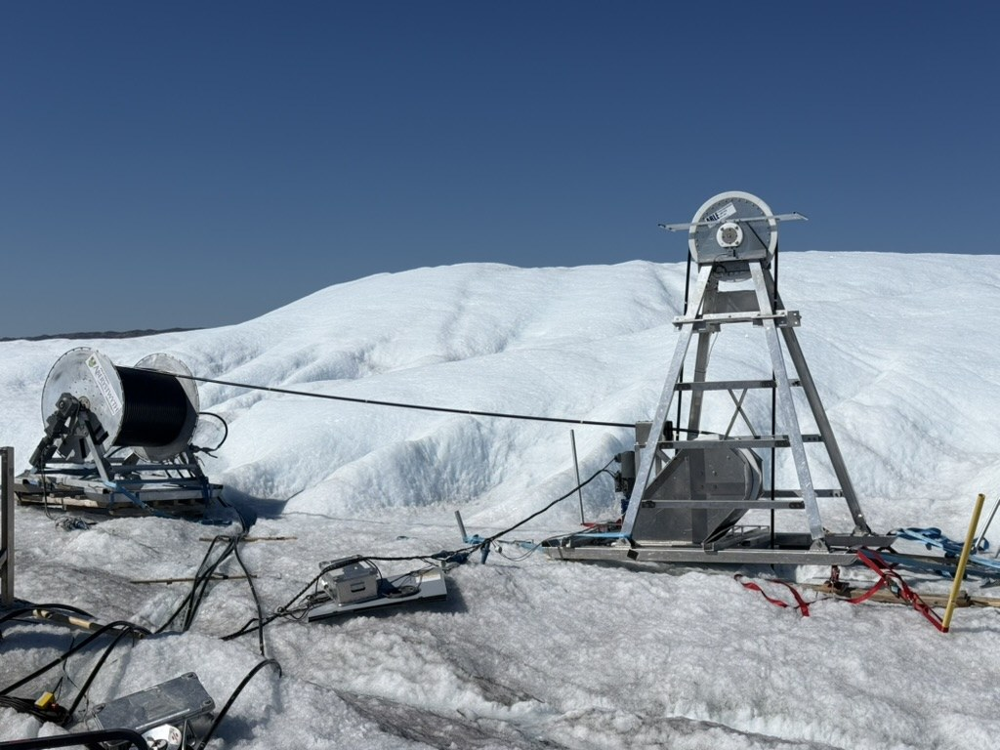
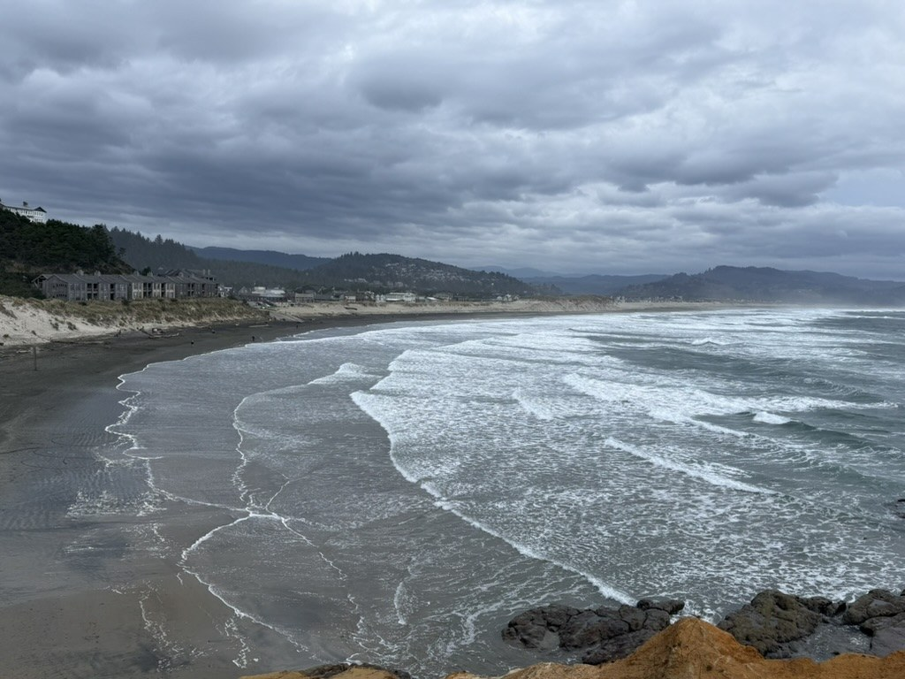
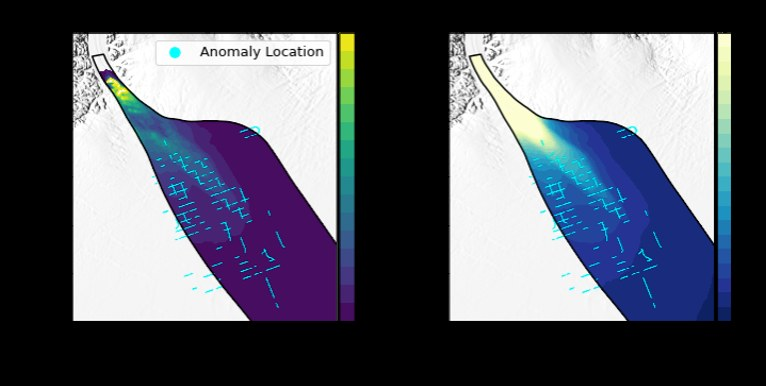
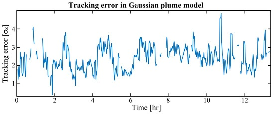

RESEARCH
Projects
My research spans glacial, marine, cryospheric, and atmospheric environments, with a common focus on extracting physical insight from geophysical observations and physics-based models.

Borehole fiber-optic sensing on Isunnguata Sermia
In July 2026 I joined a UK–US field team on Isunnguata Sermia in southwest Greenland, where we hot-water drilled three boreholes to the glacier bed. I installed and maintained field power, fiber-optic, and data-acquisition systems and helped collect multi-instrument geophysical observations targeting englacial hydrology, seismicity, and glacier dynamics.
I am using the borehole DAS observations to study how seismic and other elastic signals propagate through glacier ice, with particular interest in depth-dependent wavefields, icequakes, coupling, and the potential to resolve englacial structure and hydrologic processes.

Multi-span sensing on the OOI Regional Cabled Array
From late 2025 through early 2026 I worked on multi-span and conventional DAS measurements using ocean-bottom fiber in the Ocean Observatories Initiative Regional Cabled Array offshore Oregon. The experiment extends fiber-optic sensing beyond optical repeaters, opening much longer sections of submarine cable to geophysical observation.
My work focuses on ambient seismic wavefields and surface-wave imaging of marine sediment structure. I develop processing and inversion workflows for extracting dispersion, tracking lateral changes, and connecting dense fiber-optic observations to the shallow structure of the seafloor.

Greenland Ice Sheet structure and dynamics
As an undergraduate researcher at Amherst College, I developed Python workflows to cross-correlate CReSIS radar depth profiles with ICESat-2 observations in Greenland and Antarctica and used them to investigate spatial variability in englacial and basal structure across the Greenland Ice Sheet.
I also modeled debris-rich glacier dynamics using Icepack and studied how subsurface properties affect glacier evolution. This work contributed to my undergraduate honors thesis and later research on entrained debris as a record of Greenland Ice Sheet regrowth after the last interglacial.

Real-time plume tracking with differential-absorption LIDAR
At the National Institute of Standards and Technology, I developed a Gaussian plume dispersion model in MATLAB to quantify atmospheric controls on plume geometry and used Monte Carlo sensitivity analysis to explore uncertainty in predicted plume position.
The modeling supported a real-time system that uses atmospheric observations to position a differential-absorption LIDAR beam for greenhouse-gas emission measurements and contributed to a 2023 paper in Remote Sensing.